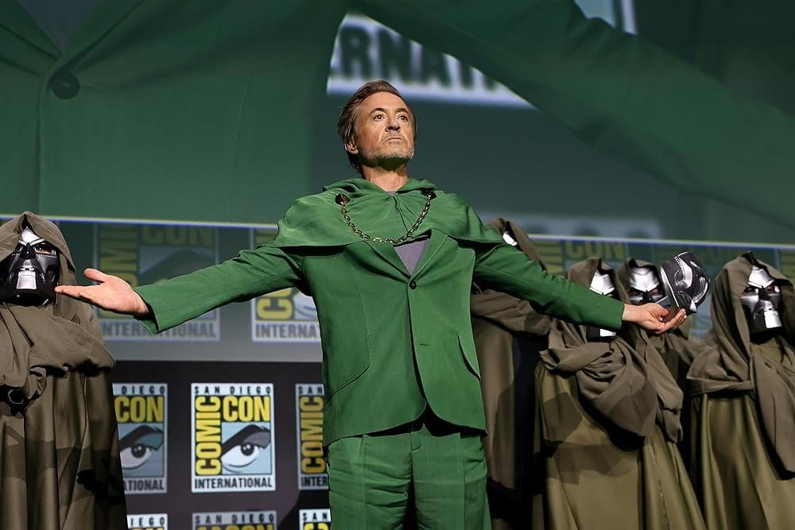
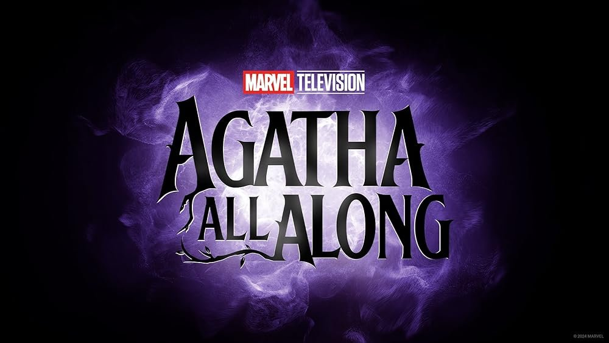
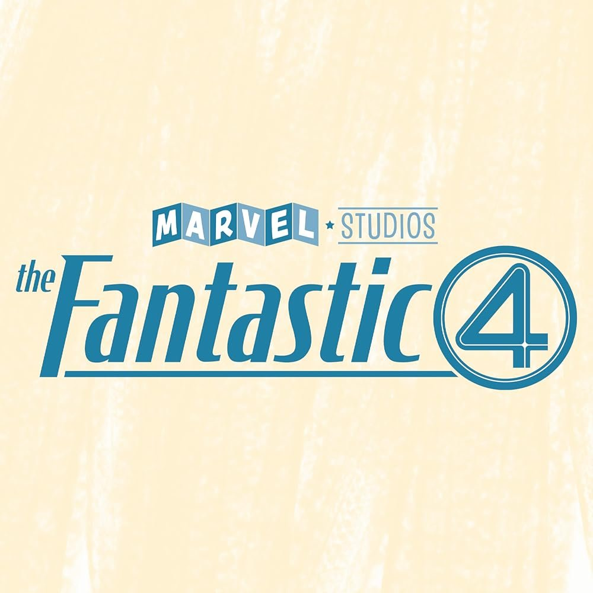
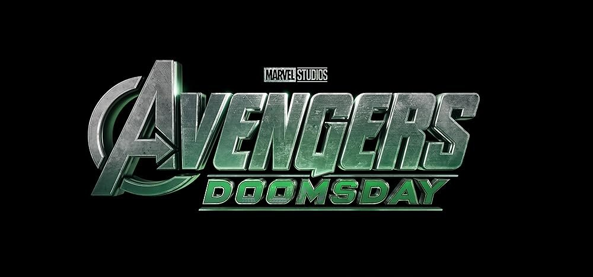
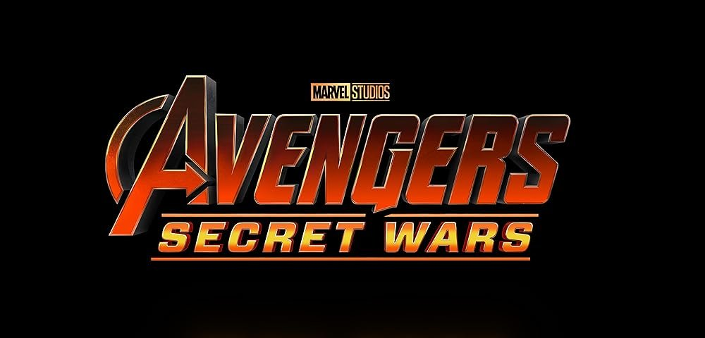

어벤져스 엔드게임 이후로 정말 끝나가는 것이 아닌가 하는 마블에 희소식이 날아들었습니다. 지난 7월 27일 미국 샌디에이고에서 열린 코믹콘 행사에서 마블의 시작을 알렸던 아이언맨 로버트 다우니 주니어가 마스크를 벗으며 빌런인 닥터둠 역할로 다시 합류한다는 소식을 알렸습니다.
어벤져스5의 메인 빌런은 캉이었으나, 캉 배역의 조너선 메이저스의 스캔들로 인해 하차하게 되어 MCU의 앞으로의 전개가 불투명했으나, 타노스도 한방에 날려버리는 닥터둠으로 로버트 다우니 주니어가 복귀하게 되며, 돌아선 어벤져스의 팬들도 뒤돌아보며 환호하는 개기가 되었습니다.
 
앞으로의 마블 영화 라인업인 마녀를 다루는 완다 비전의 스핀 오프 아가사와 닥터둠과 연관이 많은 판타스틱4의 리부트에서 언급되거나 출연할 가능성이 높습니다. 빌드업을 통해 2026년 개봉 예정인 어벤져스5 둠스데이와 2027년 개봉 예정인 어벤져스6 시크릿워까지 서사가 자연스럽게 진행될 수 있을 것으로 보입니다.
 